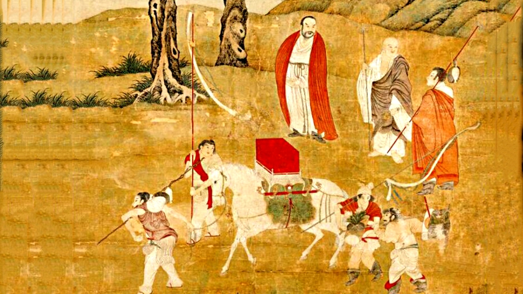

叁
佛教行像
Buddhist Image Processions
神像出游的仪式模板

法显与玄奘：行像仪式的一手记录
从人扮为神（傩舞方相氏）到抬神像出游，这一关键转变的催化剂是佛教行像仪式。
"离城三四里，作四轮像车，高三丈馀，状如行殿，七宝庄校，悬缯幡盖。像立车中，二菩萨侍，作诸天侍从，皆金银雕莹，悬于虚空。" ——法显《佛国记》
玄奘在《大唐西域记》中总述行像："诸僧伽蓝庄严佛像，莹以珍宝，饰之锦绮，载诸辇舆，谓之行像，动以千数，云集会所。"

北魏洛阳：行像中国化的高峰
"作六牙白象负释迦在虚空中……辟邪师子导引其前。吞刀吐火，腾骧一面；彩幢上索，诡谲不常。奇伎异服，冠於都市。像停之处，观者如堵，迭相践跃，常有死人。" ——杨衒之《洛阳伽蓝记》
将上述行像仪式与当代福州游神对比，结构性对应一目了然：辟邪狮子导引→马夫开路舞龙舞狮；佛像立车中→神像入轿或塔骨扛行；彩幢幡盖→旌旗仪仗；吞刀吐火百戏→阵头表演鼓板英歌。行像仪式为后世游神提供了完整的仪式"操作系统"。